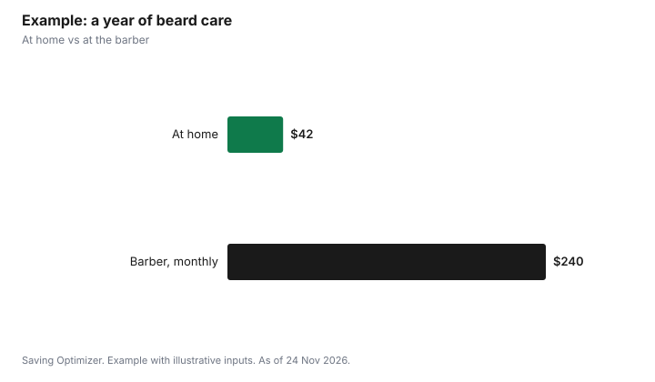

Personal Care · Canada
Beard Care on a Budget: Trimmers, Oils and What You Can Skip

A good beard doesn't need a shelf of products. Buy one trimmer with length guards, use a few drops of beard oil if your skin gets itchy or dry, and wash with your regular shampoo. In this example that's about $42 a year, against $240 for a monthly beard trim at a barber.
Key takeaways
- Trimmers at Walmart.ca: $39.97 to $77.50 (checked 24 Nov 2026).
- Beard oil: about $16 for 30 ml, which lasts months at a few drops a day.
- Minimal kit: trimmer with guards, oil, regular shampoo.
- Skip balm, wax, beard shampoo and growth serums unless you have a reason.
- Example: $42 a year at home vs $240 at a barber.
The minimal kit
| Item | Price | Notes |
|---|---|---|
| Remington Easy Fade haircut kit (Walmart.ca) | $39.97 | Clipper with guards; also does haircuts |
| Philips OneBlade 360 Face and Body (Walmart.ca) | $68.97 | Trims and shaves; blades need replacing |
| Philips OneBlade Pro (Walmart.ca) | $77.50 | Adjustable length comb |
| Bulldog Original Beard Oil, 30 ml (Walmart via Instacart) | $16.23 | A few drops a day |
What you can skip
- Beard shampoo: your regular shampoo or a gentle cleanser is fine.
- Balm and wax: only for long beards that need shaping.
- Growth oils and serums: there's little evidence they grow a beard.
- Gift sets: they bundle products you won't use.

Plan: an example
Example: a $40 trimmer lasts four years ($10 a year) and you use two bottles of oil a year ($32): $42 a year. A barber beard trim at an example $20 a month is $240 a year.
See men's grooming on a budget, home haircut clipper payback and razor cost per shave.
Sources
- Walmart.ca, Remington Easy Fade Haircut Kit, Philips OneBlade 360 Face and Body, Philips OneBlade Pro QP6530/20, checked 24 Nov 2026.
- Instacart (Walmart), Bulldog Original Beard Oil 30 ml, checked 24 Nov 2026.
Frequently asked questions
What do I need to take care of a beard?
A trimmer with length guards, a little beard oil if your skin gets dry, and regular shampoo.
Is beard oil worth it?
It can help with itch and dryness. A 30 ml bottle lasts months at a few drops a day.
Do I need beard shampoo?
No. Regular shampoo or a gentle cleanser works.
How much does a beard trimmer cost in Canada?
Walmart.ca listed trimmers from $39.97 to $77.50 when checked on 24 Nov 2026.
Do beard growth products work?
There's little evidence that oils or serums make a beard grow.
Researched and drafted with AI assistance and fact-checked against official Canadian sources. How we create content.
Note: Prices change. Barber cost is an example. Education only.